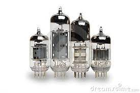

Las computadoras de esta generación emplearon bulbos de vacío (también llamados tubos de vacío) para procesar la información. Los operadores ingresaban los datos y programas en código especial por medio de tarjetas perforadas. Usaban cilindros magnéticos para almacenar información e instrucciones internas.

Bulbos utilizados en la 1ra Gen.
UNIVAC
UNIVAC fue la primera computadora diseñada y construida para un propósito no militar. Fue desarrollada para la Oficina del Censo en 1951 a fin de ayudar en el procesamiento de los datos del crecimiento poblacional. También en 1952 fue utilizada para predecir los resultados de las elecciones presidenciales de EE.UU. entre Eisenhower y Stevenson, con una muestra de apenas el 1% de la población votante la máquina predijo correctamente que Eisenhower ganaría.